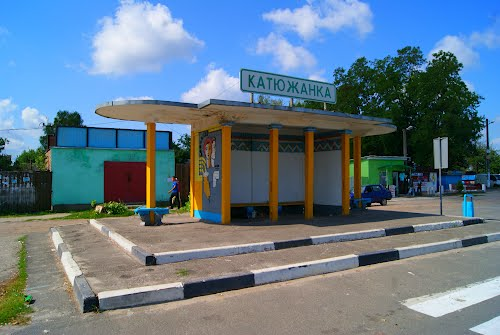
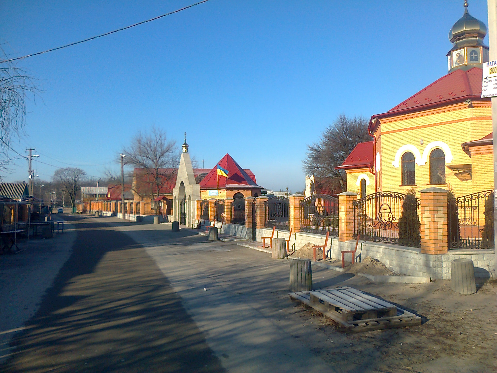

В Катюжанський старостинський округ входять села:
Катюжанка, Гута-Катюжанська , Абрамівка, Савенки, Дудки :
Староста округа - Осадча Анна Анатоліївна.
Тел. стац.: (04596)32 216
Тел. моб..: 098 467 4818
E-Mail: Katyuzhanka.rada@ukr.net
Прийомні дні :
с. Катюжанка , Гута-Катюжанська : понеділок, середа 8.00-16.00 (обід 13.00-14.00)
За адресою: село Катюжанка, вул Кичигіна 5А.
с. Абрамівка, Савенки, Дудки : вівторок 9.00-13.00
За адресою: село Абрамівка, вул Центральна 2.
Катюжанський старостинський округ , адміністративні послуги :
I. Реєстрація :
- 1. Довідка про реєстрацію місця проживання
- 2. Зняття з реєстрації місця проживання
- 3. Реєстрація місця проживання
2. Вчинення нотаріальних дій : Довіреності , Заповіти , вірність підпису, різні довідки та інше ... .
3. Прийом від жителів Катюжанського старостинського округу заяв, адресованих селищній раді та її посадовим особам, та передача їх для реєстрації до селищої ради. Допомога в оформленні та заповненні даних заяв.
4. Складання актів обстеження житлово-побутових умов.
5. Оформлення субсидій.
Додатково: Центр надання адміністративних та соціальних послуг Димерської селищної ради.
Додатково: Необхідний перелік документів по кожній адміністративній послузі у вкладених файлах :
- Державна реєстрація права власності на нерухоме майно
- Внесення змін до записів Державного реєстру речових прав на нерухоме майно
- Державна реєстрація іншого речового права на нерухоме майно
- Взяття на облік безхазяйного майна
- Надання інформаційної довідки з Державного реєстру речових прав на нерухоме майно
- Довідка про реєстрацію місця проживання (дану послугу можна отримати у старости за місцем реєстрації)
- Зняття з реєстрації місця проживання (дану послугу можна отримати у старости за місцем реєстрації)
- Реєстрація місця проживання (дану послугу можна отримати у старости за місцем реєстрації)
- Державна реєстрація народження дитини та її походження
- Державна реєстрація шлюбу
- Державна реєстрація смерті
- Державна реєстрація створення юридичної особи (крім громадського формування)
- Державна реєстрація включення відомостей про юридичну особу, зареєстровану до 01 липня 2004 року, відомості про яку не містяться в Єдиному державному реєстрі юридичних осіб, фізичних осіб – підприємців та громадських формувань (крім громадського формування)
- Державна реєстрація змін до відомостей про юридичну особу, що містяться в Єдиному державному реєстрі юридичних осіб, фізичних осіб – підприємців та громадських формувань, у тому числі змін до установчих документів юридичної особи (крім громадського формування)
- Державна реєстрація переходу юридичної особи з модельного статуту на діяльність на підставі власного установчого документа (крім громадського формування)
- Державна реєстрація переходу юридичної особи на діяльність на підставі модельного статуту (крім громадського формування)
- Державна реєстрація рішення про припинення юридичної особи (крім громадського формування)
- Державна реєстрація рішення про відміну рішення про припинення юридичної особи (крім громадського формування)
- Державна реєстрація припинення юридичної особи в результаті її ліквідації (крім громадського формування)
- Державна реєстрація фізичної особи підприємцем
- Державна реєстрація включення відомостей про фізичну особу – підприємця, зареєстровану до 01 липня 2004 року, відомості про яку не містяться в Єдиному державному реєстрі юридичних осіб, фізичних осіб – підприємців та громадських формувань
- Державна реєстрація змін до відомостей про фізичну особу – підприємця, що містяться в Єдиному державному реєстрі юридичних осіб, фізичних осіб – підприємців та громадських формувань
- Державна реєстрація припинення підприємницької діяльності фізичної особи – підприємця за її рішенням
- Видача витягу з Єдиного державного реєстру юридичних осіб, фізичних осіб – підприємців та громадських формувань
- Адміністративна послуга з виправлення помилок, допущених у відомостях Єдиного державного реєстру юридичних осіб, фізичних осіб – підприємців та громадських формувань
- Адміністративна послуга з підтвердження відомостей про кінцевого бенефіціарного власника юридичної особи (структура власності)
Додатково: Соціальні послуги та необхідний перелік документів по кожній соціальній послузі у вкладених файлах з Димерської селищної ради :
Увага !
На території Катюжанського старостинський округа знаходиться
місцева пожежна команда.
Адреса - село Катюжанка, вул Заводська 1 . Тел. (04596) 32-270
На території Катюжанського старостинський округа знаходиться
місцева пожежна команда.
Адреса - село Катюжанка, вул Заводська 1 . Тел. (04596) 32-270